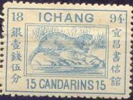
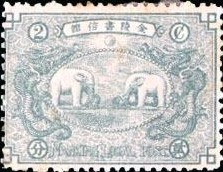
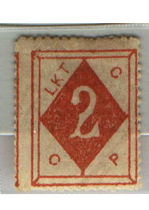
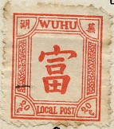
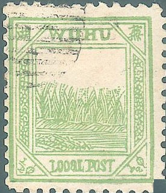
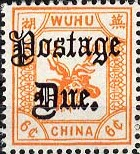

(Reduced size)
Return To Catalogue - China Local Issues, part 1 - China
Note: on my website many of the
pictures can not be seen! They are of course present in the
catalogue;
contact me if you want to purchase the catalogue.
Note that other stamps than the ones listed here may exist!
Ichang became a treaty port in 1877, a local post was established in 1895.
(Reduced size)

In 1894 the otter design was issued (15 c blue), the 1 m shows the phoenix bird, the value of 3 m shows the map of the city in the 12th century.
Chinese coins:
(Reduced sizes)
1/2 c black on lilac 1/2 c orange on yellow
Overprinted 'Postage Due' and chinese characters
1/2 c black on lilac 1/2 c orange on yellow
1 c black 2 c red 5 c grey on yellow 6 c yellow 10 c black 15 c brown on yellow 20 c violet on lilac 40 c black on red Surcharged

'HALF 1/2 CENT.' 20 c violet on lilac (also with inverted surcharge) 'ONE 1 CENT.' on 15 c brown on yellow 'TWO 2 CENTS.' on 6 c yellow Overprinted 'Postage Due' 5 c grey on yellow


1/2 c black on lilac 1/2 c red on yellow 1 c black Overprinted 'Postage Due' and chinese characters
(Reduced size)
1 c black
1896 Various centers, frame the same

1/2 c lilac (landscape?) 1 c red (temple, I've seen this value imperforate) 2 c grey (elephants) 3 c yellow (?) 4 c red (temple, different from the other temple) 5 c lilac (bell) 5 c blue (bell) 10 c green (temple) 20 c brown (temple)

I've seen forgeries of these stamps (made by a forger from Hialeah Florida). They are made with a computer scanner and printer, examples:
(Examples of modern Hialeah forgeries)


Birds '1/2 Cent.' (red) on 1 c brown 1/2 c black (many birds) 1/2 c violet (two birds) 1 c brown 2 c green (owl) Dear 6 c brown 40 c red Chinese characters in the centre 1/2 c yellow 1/2 c yellow (with P.P.C. overprint) Overprinted with chinese characters 1/2 c black (red overprint) 1/2 c black (black overprint) 1 c brown 2 c yellow 5 c red (chinese tempel) 6 c grey (chinese characters) 10 c red 15 c green (chinese tempel) 40 c orange Overprinted 'POSTAGE DUE' in fancy letters Many values exist among them (also with inverted overprint):

1 c brown 1 c blue 2 c green (owl) 15 c olive 20 c red (chinese characters) 40 c red (dear)



Forgery of the 1/2 c, the lettering is very badly done, see for
example the words 'LOCAL POST'. I presume this forgery was made
by Kamigata, a similar forgery of the
1 c bird stamp can be found in 'Focus on Forgeries' by V.E.Tyler.
The stamps of Wuhu are of speculative nature, although genuinely used stamps do exist.
I've seen forgeries of these stamps (made by a forger from Hialeah, Florida). They are made with a computer scanner and printer, examples:

Some stamps of the town of Tientsin exist, a dragon in a similar design as the first stamps of Shanghai, (some of them overprinted 'Postage Due'), but they were never officially issued:
I have seen the following values, 1/2 c green, 1
c brown, 2 c lilac, 5 c yellow, 10 c blue and 15 c red;
With overprint 'Postage Due': 1/2 c green, 1 c brown, 5 c yellow,
10 c blue, 15 c red.


{kind=link}
{kind=link}
{kind=link}
{kind=link}
{kind=link}
{kind=link}